CODING AGENTS AS PIXEL WORLD MODELS
traex/GPT-6.1-Sol · common50_0037
点击播放 · 原生 RGB 像素
逐轮保存的候选
回放视频、检查图与代码变化。
每份候选均可单独播放。实际图片检查记录在下方工具轨迹中。
候选 01播放与检查图
点击播放 · 原生 RGB 像素

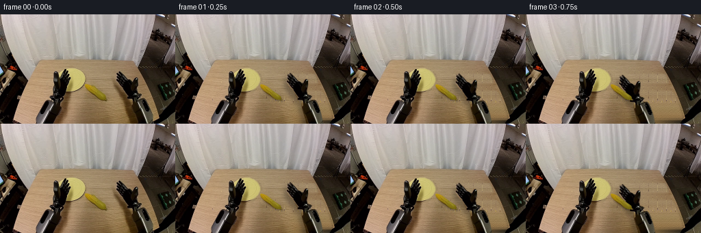
展开代码变化
--- 上一保存版本
+++ 本次保存版本
@@ -0,0 +1,209 @@
+from pathlib import Path
+import math
+import numpy as np
+from PIL import Image, ImageDraw, ImageFilter
+import artifact_io
+
+ROOT=Path(__file__).resolve().parent
+W,H=256,160
+S=4
+src=Image.open(ROOT/'first_frame.png').convert('RGB')
+rgb=np.asarray(src).copy()
+
+# All contours and materials are derived from the supplied observation.
+def polygon(points, size=(W,H), feather=0.25):
+ m=Image.new('L',(size[0]*S,size[1]*S));d=ImageDraw.Draw(m)
+ d.polygon([(round(x*S),round(y*S)) for x,y in points],fill=255)
+ m=m.resize(size,Image.Resampling.LANCZOS)
+ if feather: m=m.filter(ImageFilter.GaussianBlur(feather))
+ return m
+left_pts=[(53,160),(52,150),(53,141),(56,133),(61,126),(65,124),(68,126),(74,125),(77,122),(73,120),(72,117),(76,114),(77,107),(78,99),(77,94),(78,89),(78,84),(80,82),(83,83),(85,86),(85,93),(87,92),(90,86),(93,81),(95,80),(96,81),(95,86),(98,83),(100,83),(100,85),(98,89),(101,87),(102,88),(102,91),(100,95),(102,93),(104,93),(103,97),(100,102),(98,106),(97,112),(95,117),(92,120),(92,124),(88,128),(89,135),(87,144),(85,153),(83,160)]
+right_pts=[(199,160),(197,151),(194,142),(192,135),(191,129),(192,124),(188,123),(185,123),(185,120),(182,115),(179,110),(174,105),(171,101),(169,97),(169,95),(170,94),(173,97),(172,93),(170,90),(170,88),(171,87),(174,89),(171,86),(170,85),(171,84),(174,85),(178,90),(175,85),(174,84),(175,83),(177,85),(180,88),(184,92),(186,95),(190,97),(192,99),(194,95),(197,92),(200,93),(201,95),(201,100),(200,105),(199,110),(200,115),(204,116),(207,118),(206,121),(204,123),(207,123),(211,123),(214,125),(216,128),(217,134),(220,143),(222,152),(224,160)]
+corn_pts=[(123.8,103),(125.8,102.1),(129.1,103),(134.0,105),(139,109),(144,113),(150,117),(154,120),(155.3,123.7),(157,125),(155,126),(152,125),(148,124.7),(142,121.8),(137,118),(132,115),(128,111.5),(125.2,108),(124,105)]
+leftmask=polygon(left_pts);rightmask=polygon(right_pts);cornmask=polygon(corn_pts,feather=.15)
+
+# Reconstruct the surfaces exposed by the moving objects. Horizontal wood
+# grain is propagated from neighbouring visible strips, with smooth lighting.
+left_clean=polygon([(49,160),(49,143),(55,126),(66,116),(72,94),(76,80),(83,79),(98,78),(108,92),(110,116),(104,144),(101,160)],feather=1.7)
+right_clean=polygon([(163,82),(177,79),(191,89),(204,91),(206,111),(215,119),(224,139),(229,160),(184,160),(177,140),(172,120),(165,106)],feather=2)
+corn_clean=polygon([(121,101),(129,100),(141,106),(151,114),(159,123),(158,129),(147,128),(131,119),(122,110)],feather=1.3)
+# Omit the plate while interpolating the wooden tabletop.
+plate_mask=polygon([(101,79),(109,79),(116,82),(121,87),(124,93),(124,98),(121,104),(116,109),(109,112),(101,114),(92,114),(85,111),(79,106),(77,99),(80,91),(84,86),(91,82),(97,80)],feather=.7)
+missing=(np.maximum.reduce([np.asarray(left_clean),np.asarray(right_clean),np.asarray(corn_clean),np.asarray(plate_mask)])>6)
+background=rgb.astype(float).copy()
+for y in range(77,H):
+ # Original table's silhouette at the bottom right and front left.
+ lo=max(20, int(51-(y-68)*.37));hi=min(233,int(195+(y-68)*.43))
+ valid=np.flatnonzero(~missing[y])
+ valid=valid[(valid>=lo)&(valid<=hi)]
+ if len(valid)<2: continue
+ for c in range(3):
+ line=np.interp(np.arange(W),valid,rgb[y,valid,c])
+ background[y,:,c]=np.where(missing[y],line,background[y,:,c])
+# Remove interpolation streaks while retaining the photographed wood grain.
+low=np.asarray(Image.fromarray(np.uint8(np.clip(background,0,255))).filter(ImageFilter.GaussianBlur(2.5))).astype(float)
+origlow=np.asarray(src.filter(ImageFilter.GaussianBlur(1.7))).astype(float)
+wood_detail=rgb.astype(float)-origlow
+for y in range(77,H):
+ for x in range(W):
+ if missing[y,x]:
+ donorx=113+(x*7)%46
+ # Clean donor patches, never the corn or a gripper.
+ donory=y if y>=129 or y<100 else y-24
+ detail=wood_detail[donory,donorx]
+ background[y,x]=.25*background[y,x]+.75*low[y,x]+.7*detail
+# Outside the table don't alter the surrounding room.
+tablemask=polygon([(51,68),(194,69),(202,82),(215,111),(232,145),(233,148),(225,160),(40,160),(19,153),(26,125),(36,98)],feather=.15)
+a=np.asarray(tablemask)/255.
+background=background*a[...,None]+rgb*(1-a[...,None])
+
+# Restore the hidden portion of the yellow dish by using its visible side.
+plate=np.zeros_like(background)
+for y in range(H):
+ for x in range(W):
+ px=int(np.clip(204-x if x<102 else x,104,120))
+ py=int(np.clip(y,81,109))
+ col=rgb[py,px].astype(float)
+ if not (col[0]>170 and col[1]>155 and col[2]<155):
+ col=np.array([205,193,114],float)
+ plate[y,x]=col
+# A softly raised rim, with the small shadow on the lower edge.
+yy,xx=np.mgrid[:H,:W]
+r=np.sqrt(((xx-102.3)/22.2)**2+((yy-96.1)/16.65)**2)
+for c in range(3):
+ plate[:,:,c]+=np.where(r>.90, (2 if c<2 else 3),0)
+plate[:,:,0]-=np.clip((yy-108)*2,0,10)
+plate[:,:,1]-=np.clip((yy-108)*2,0,10)
+plate[:,:,2]-=np.clip((yy-108)*1.2,0,7)
+pa=np.asarray(plate_mask)/255.
+# Use actual pixels where the plate was unoccluded.
+occ=(np.asarray(leftmask)>0)
+actual=(pa>.2)&(~occ)&(rgb[:,:,0]>168)&(rgb[:,:,1]>150)&(rgb[:,:,2]<158)
+plate[actual]=rgb[actual]
+pshadow=Image.fromarray(np.uint8(pa*95)).filter(ImageFilter.GaussianBlur(1.2))
+pshadow=np.roll(np.roll(np.asarray(pshadow)/255.,2,axis=0),0,axis=1)
+background*=1-.16*pshadow[...,None]
+background=background*(1-pa[...,None])+plate*pa[...,None]
+background=np.uint8(np.clip(background,0,255))
+Image.fromarray(background).save(ROOT/'.tmp/background.png')
+
+# Sprite extraction at sub-pixel resolution. The metallic forearms and the
+# wrist housings undergo only one Euclidean rigid transform per frame.
+def extract(mask):
+ im=Image.new('RGBA',(W,220));im.paste(src,(0,0));
+ am=Image.new('L',(W,220));am.paste(mask,(0,0));im.putalpha(am)
+ return im
+
+def extend_arm(im,side):
+ arr=np.asarray(im).copy()
+ for y in range(160,220):
+ shift=int(round((-.42 if side=='left' else .34)*(y-159)))
+ for x in range(W):
+ sx=x-shift
+ if 0<=sx<W: arr[y,x]=arr[154+(y%5),sx]
+ return Image.fromarray(arr)
+L=extend_arm(extract(leftmask),'left');R=extend_arm(extract(rightmask),'right')
+C=extract(cornmask)
+# Finger groups rotate out of the image plane about their knuckles; a projected
+# shortening represents joint closure, not a stretch of the rigid forearm.
+lfinger=polygon([(86,100),(88,92),(91,86),(94,80),(96,80),(96,85),(99,82),(101,83),(100,89),(102,87),(103,89),(101,95),(103,93),(104,94),(102,99),(99,104),(94,108),(88,108)],size=(W,220),feather=.25)
+rfinger=polygon([(169,84),(175,81),(184,90),(190,97),(188,103),(180,107),(174,101),(168,97),(169,93),(171,93),(168,87)],size=(W,220),feather=.25)
+lthumb=polygon([(77.5,84),(81,81.5),(85,84),(86,93),(86,107),(84,112),(79,110),(77,99)],size=(W,220),feather=.25)
+rthumb=polygon([(194,94),(198,91),(201,93),(202,100),(200,109),(197,114),(193,113),(191,106),(192,100)],size=(W,220),feather=.25)
+
+def affine(im,M,shape=(W,H)):
+ inv=np.linalg.inv(M)
+ return im.transform(shape,Image.Transform.AFFINE,tuple(inv[:2].ravel()),Image.Resampling.BICUBIC)
+
+def transform(dx,dy,angle,pivot):
+ t=math.radians(angle);ct,st=math.cos(t),math.sin(t);x,y=pivot
+ return np.array([[ct,-st,x+dx-ct*x+st*y],[st,ct,y+dy-st*x-ct*y],[0,0,1.]])
+
+def closehand(original,fmask,tmask,side,close):
+ if close<.001:return original,Image.new('RGBA',original.size)
+ arr=np.asarray(original).copy();fa=np.asarray(fmask)/255.;ta=np.asarray(tmask)/255.
+ al=arr[:,:,3]/255.
+ fing=arr.copy();fing[:,:,3]=np.uint8(al*fa*255)
+ thumb=arr.copy();thumb[:,:,3]=np.uint8(al*ta*255)
+ keep=1-np.maximum(fa,ta)
+ arr[:,:,3]=np.uint8(al*keep*255)
+ main=Image.fromarray(arr)
+ # The rigid palm's dark internal backing remains behind closing digits.
+ backing=Image.new('RGBA',original.size);bd=ImageDraw.Draw(backing)
+ if side=='right':
+ bd.polygon([(177,99),(184,96),(194,101),(195,114),(190,119),(183,111)],fill=(13,13,11,255))
+ ky=103.;fx=-.8*close;tx=-5*close;ty=3*close
+ else:
+ bd.polygon([(84,99),(91,95),(98,99),(96,114),(92,119),(85,113)],fill=(13,13,11,255))
+ ky=105.;fx=-.3*close;tx=4*close;ty=2*close
+ backing.alpha_composite(main)
+ sy=1-.43*close
+ FM=np.array([[1,0,fx],[0,sy,ky*(1-sy)],[0,0,1.]])
+ finger=affine(Image.fromarray(fing),FM,original.size)
+ # Thumb closes through a smaller independent, rigid joint rotation.
+ TM=transform(tx,ty,-17*close if side=='right' else 12*close,(196,111) if side=='right' else (83,110))
+ th=affine(Image.fromarray(thumb),TM,original.size)
+ backing.alpha_composite(finger);backing.alpha_composite(th)
+ foreground=Image.new('RGBA',original.size)
+ foreground.alpha_composite(finger);foreground.alpha_composite(th)
+ return backing,foreground
+
+# Smooth, contact-aware trajectory: approach, grasp, lift, place on dish,
+# release, withdraw; the other gripper then picks the same rigid cob up.
+keys=[
+# frame, right dx,dy,angle,closure, left dx,dy,angle,closure, corn x,y,angle,height
+(0,0,0,0,0, 0,0,0,0, 140,114,0,0),
+(1,-7,2,0,0, 0,0,0,0,140,114,0,0),
+(4,-43,6,0,0, 0,0,0,0,140,114,0,0),
+(6,-43,6,0,1, 0,0,0,0,140,114,0,0),
+(7,-43,-1,0,1, 0,0,0,0,140,107,0,7),
+(9,-79,-15,0,1, 0,0,0,0,104,93,0,5),
+(10,-79,-12,0,1, 0,0,0,0,104,96,0,0),
+(11,-79,-12,0,0, 0,0,0,0,104,96,0,0),
+(12,-68,-15,0,0, 5,-2,0,0,104,96,0,0),
+(14,-16,-3,0,0, 17,-6,0,0,104,96,0,0),
+(15,-3,0,0,0, 17,-6,0,1,104,96,0,0),
+(16,0,0,0,0, 17,-12,0,1,104,90,0,6),
+(18,0,0,0,0, 2,6,-3,1,89,108,-3,8),
+(19,0,0,0,0, 0,8,-3,1,87,110,-3,8),
+]
+
+def values(i):
+ for j in range(len(keys)-1):
+ a,b=keys[j],keys[j+1]
+ if a[0]<=i<=b[0]:
+ t=(i-a[0])/(b[0]-a[0]);t=t*t*(3-2*t)
+ return np.array(a[1:])*(1-t)+np.array(b[1:])*t
+ return np.array(keys[-1][1:])
+
+def shadow(canvas,im,offset=(0,5),radius=2.8,strength=.25):
+ a=im.getchannel('A')
+ m=Image.new('L',(W,H));m.paste(a,(int(offset[0]),int(offset[1])))
+ a=np.asarray(m.filter(ImageFilter.GaussianBlur(radius)))/255.
+ return Image.fromarray(np.uint8(np.asarray(canvas)*(1-a[...,None]*strength)))
+frames=[rgb]
+for i in range(1,20):
+ rx,ry,ra,rc,lx,ly,la,lc,cx,cy,ca,height=values(i)
+ lbase,lfront=closehand(L,lfinger,lthumb,'left',lc)
+ rbase,rfront=closehand(R,rfinger,rthumb,'right',rc)
+ LM=transform(lx,ly,la,(82,123));RM=transform(rx,ry,ra,(197,123))
+ lim=affine(lbase,LM);rim=affine(rbase,RM)
+ lf=affine(lfront,LM);rf=affine(rfront,RM)
+ cim=affine(C,transform(cx-140,cy-114,ca,(140,114)))
+ canvas=Image.fromarray(background)
+ if i<=11:
+ # The idle left robot and its real shadow do not change at all.
+ canvas.paste(src,(0,0),left_clean)
+ else: canvas=shadow(canvas,lim,(-3,6),3,.23)
+ canvas=shadow(canvas,rim,(-4,6),3.1,.28)
+ canvas=shadow(canvas,cim,(1+height*.16,2+height*.45),1.0+height*.14,.24 if height==0 else .13)
+ canvas=canvas.convert('RGBA')
+ canvas.alpha_composite(lim);canvas.alpha_composite(rim)
+ canvas.alpha_composite(cim)
+ # Digits form two-sided contact while preserving a clearly visible cob.
+ if rc>.02:canvas.alpha_composite(rf)
+ if lc>.02:canvas.alpha_composite(lf)
+ frames.append(np.asarray(canvas.convert('RGB')))
+frames=np.stack(frames).astype(np.uint8)
+artifact_io.save(frames,ROOT)
+print('Saved',frames.shape,frames.dtype)
候选 02播放与检查图
点击播放 · 原生 RGB 像素

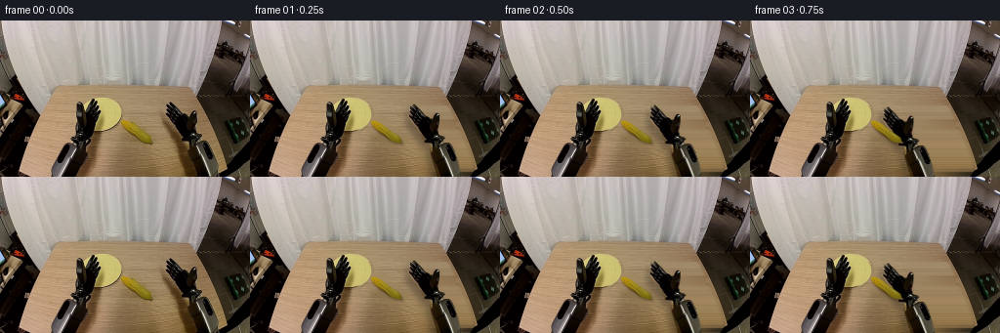
展开代码变化
--- 上一保存版本
+++ 本次保存版本
@@ -28,7 +28,8 @@
right_clean=polygon([(163,82),(177,79),(191,89),(204,91),(206,111),(215,119),(224,139),(229,160),(184,160),(177,140),(172,120),(165,106)],feather=2)
corn_clean=polygon([(121,101),(129,100),(141,106),(151,114),(159,123),(158,129),(147,128),(131,119),(122,110)],feather=1.3)
# Omit the plate while interpolating the wooden tabletop.
-plate_mask=polygon([(101,79),(109,79),(116,82),(121,87),(124,93),(124,98),(121,104),(116,109),(109,112),(101,114),(92,114),(85,111),(79,106),(77,99),(80,91),(84,86),(91,82),(97,80)],feather=.7)
+plate_hi=Image.new('L',(W*S,H*S)); ImageDraw.Draw(plate_hi).ellipse((79*S,79*S,124*S,113.5*S),fill=255)
+plate_mask=plate_hi.resize((W,H),Image.Resampling.LANCZOS).filter(ImageFilter.GaussianBlur(.20))
missing=(np.maximum.reduce([np.asarray(left_clean),np.asarray(right_clean),np.asarray(corn_clean),np.asarray(plate_mask)])>6)
background=rgb.astype(float).copy()
for y in range(77,H):
@@ -51,7 +52,7 @@
# Clean donor patches, never the corn or a gripper.
donory=y if y>=129 or y<100 else y-24
detail=wood_detail[donory,donorx]
- background[y,x]=.25*background[y,x]+.75*low[y,x]+.7*detail
+ background[y,x]=.35*background[y,x]+.65*low[y,x]
# Outside the table don't alter the surrounding room.
tablemask=polygon([(51,68),(194,69),(202,82),(215,111),(232,145),(233,148),(225,160),(40,160),(19,153),(26,125),(36,98)],feather=.15)
a=np.asarray(tablemask)/255.
@@ -59,26 +60,18 @@
# Restore the hidden portion of the yellow dish by using its visible side.
plate=np.zeros_like(background)
-for y in range(H):
- for x in range(W):
- px=int(np.clip(204-x if x<102 else x,104,120))
- py=int(np.clip(y,81,109))
- col=rgb[py,px].astype(float)
- if not (col[0]>170 and col[1]>155 and col[2]<155):
- col=np.array([205,193,114],float)
- plate[y,x]=col
-# A softly raised rim, with the small shadow on the lower edge.
yy,xx=np.mgrid[:H,:W]
-r=np.sqrt(((xx-102.3)/22.2)**2+((yy-96.1)/16.65)**2)
-for c in range(3):
- plate[:,:,c]+=np.where(r>.90, (2 if c<2 else 3),0)
-plate[:,:,0]-=np.clip((yy-108)*2,0,10)
-plate[:,:,1]-=np.clip((yy-108)*2,0,10)
-plate[:,:,2]-=np.clip((yy-108)*1.2,0,7)
+r=np.sqrt(((xx-101.5)/22.5)**2+((yy-96.25)/17.25)**2)
+# Smoothly lit inner well with a fine circular raised rim.
+for c,base in enumerate([207.5,196,118]):
+ plate[:,:,c]=base-.12*(xx-102)-.11*(yy-94)
+ plate[:,:,c]+=1.1*np.cos((yy-82)*.56)
+ plate[:,:,c]-=np.exp(-((r-.88)/.023)**2)*3
+ plate[:,:,c]+=np.exp(-((r-.97)/.035)**2)*3.5
pa=np.asarray(plate_mask)/255.
-# Use actual pixels where the plate was unoccluded.
-occ=(np.asarray(leftmask)>0)
-actual=(pa>.2)&(~occ)&(rgb[:,:,0]>168)&(rgb[:,:,1]>150)&(rgb[:,:,2]<158)
+# Maintain photographed pixels along the unobstructed side of the dish.
+visible=(xx>=109)|((yy<89)&(xx>=102))
+actual=(pa>.98)&visible&(rgb[:,:,0]>172)&(rgb[:,:,1]>160)&(rgb[:,:,2]<150)
plate[actual]=rgb[actual]
pshadow=Image.fromarray(np.uint8(pa*95)).filter(ImageFilter.GaussianBlur(1.2))
pshadow=np.roll(np.roll(np.asarray(pshadow)/255.,2,axis=0),0,axis=1)
@@ -136,6 +129,7 @@
else:
bd.polygon([(84,99),(91,95),(98,99),(96,114),(92,119),(85,113)],fill=(13,13,11,255))
ky=105.;fx=-.3*close;tx=4*close;ty=2*close
+ back_arr=np.asarray(backing).copy(); back_arr[:,:,3]=np.minimum(back_arr[:,:,3],np.asarray(original)[:,:,3]); backing=Image.fromarray(back_arr)
backing.alpha_composite(main)
sy=1-.43*close
FM=np.array([[1,0,fx],[0,sy,ky*(1-sy)],[0,0,1.]])
候选 03播放与检查图
点击播放 · 原生 RGB 像素
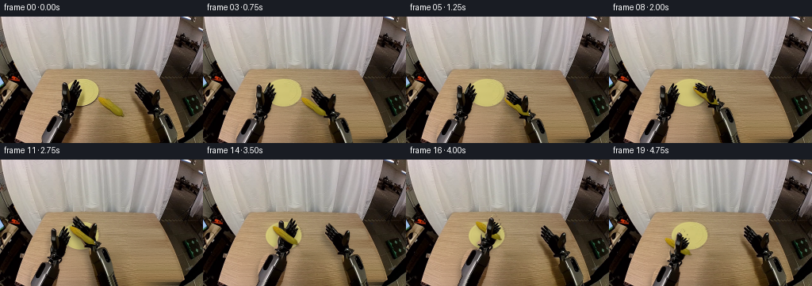
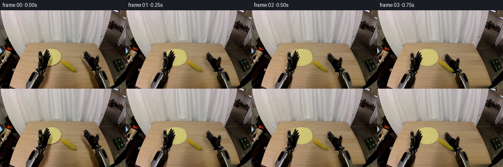
展开代码变化
--- 上一保存版本
+++ 本次保存版本
@@ -52,7 +52,9 @@
# Clean donor patches, never the corn or a gripper.
donory=y if y>=129 or y<100 else y-24
detail=wood_detail[donory,donorx]
- background[y,x]=.35*background[y,x]+.65*low[y,x]
+ # A contiguous observed wood strip supplies subtle, stable fine grain.
+ ty=130+(y%14);tx=108+((x-20)%47)
+ background[y,x]=.35*background[y,x]+.65*low[y,x]+.65*wood_detail[ty,tx]
# Outside the table don't alter the surrounding room.
tablemask=polygon([(51,68),(194,69),(202,82),(215,111),(232,145),(233,148),(225,160),(40,160),(19,153),(26,125),(36,98)],feather=.15)
a=np.asarray(tablemask)/255.
@@ -93,7 +95,9 @@
shift=int(round((-.42 if side=='left' else .34)*(y-159)))
for x in range(W):
sx=x-shift
- if 0<=sx<W: arr[y,x]=arr[154+(y%5),sx]
+ if 0<=sx<W:
+ arr[y,x]=arr[159,sx]
+ arr[y,x,:3]=np.uint8(arr[y,x,:3].astype(float)*max(.80,1-.002*(y-159)))
return Image.fromarray(arr)
L=extend_arm(extract(leftmask),'left');R=extend_arm(extract(rightmask),'right')
C=extract(cornmask)
@@ -147,14 +151,14 @@
keys=[
# frame, right dx,dy,angle,closure, left dx,dy,angle,closure, corn x,y,angle,height
(0,0,0,0,0, 0,0,0,0, 140,114,0,0),
-(1,-7,2,0,0, 0,0,0,0,140,114,0,0),
-(4,-43,6,0,0, 0,0,0,0,140,114,0,0),
-(6,-43,6,0,1, 0,0,0,0,140,114,0,0),
-(7,-43,-1,0,1, 0,0,0,0,140,107,0,7),
-(9,-79,-15,0,1, 0,0,0,0,104,93,0,5),
-(10,-79,-12,0,1, 0,0,0,0,104,96,0,0),
-(11,-79,-12,0,0, 0,0,0,0,104,96,0,0),
-(12,-68,-15,0,0, 5,-2,0,0,104,96,0,0),
+(1,-7,2,0,0, -2,1,0,0,140,114,0,0),
+(4,-43,6,0,0, -14,4,0,0,140,114,0,0),
+(6,-43,6,0,1, -14,4,0,0,140,114,0,0),
+(7,-43,-1,0,1, -14,4,0,0,140,107,0,7),
+(9,-79,-15,0,1, -14,4,0,0,104,93,0,5),
+(10,-79,-12,0,1, -14,4,0,0,104,96,0,0),
+(11,-79,-12,0,0, -14,4,0,0,104,96,0,0),
+(12,-50,-16,0,0, -14,4,0,0,104,96,0,0),
(14,-16,-3,0,0, 17,-6,0,0,104,96,0,0),
(15,-3,0,0,0, 17,-6,0,1,104,96,0,0),
(16,0,0,0,0, 17,-12,0,1,104,90,0,6),
@@ -185,11 +189,11 @@
lf=affine(lfront,LM);rf=affine(rfront,RM)
cim=affine(C,transform(cx-140,cy-114,ca,(140,114)))
canvas=Image.fromarray(background)
- if i<=11:
- # The idle left robot and its real shadow do not change at all.
- canvas.paste(src,(0,0),left_clean)
- else: canvas=shadow(canvas,lim,(-3,6),3,.23)
- canvas=shadow(canvas,rim,(-4,6),3.1,.28)
+ canvas=shadow(canvas,lim,(-3,6),3,.23)
+ if i>=16:
+ canvas.paste(src,(0,0),right_clean)
+ else:
+ canvas=shadow(canvas,rim,(-4,6),3.1,.28)
canvas=shadow(canvas,cim,(1+height*.16,2+height*.45),1.0+height*.14,.24 if height==0 else .13)
canvas=canvas.convert('RGBA')
canvas.alpha_composite(lim);canvas.alpha_composite(rim)
可观测工具轨迹
实际执行的命令与返回图片。
命令 1exit 0
/bin/bash -lc "ls -la && cat prompt.txt && printf '\\n--- RULES ---\\n' && cat GENERATION_RULES.md"
命令 2exit 0
/bin/bash -lc 'cat task_spec.json && cat artifact_io.py && cat player_template.html'
命令 3exit 0
/bin/bash -lc "python - <<'PY'
from PIL import Image
im=Image.open('first_frame.png'); print(im.size); im.resize((1024,640)).save('.tmp/first_large.png')
PY"命令 4exit 0
/bin/bash -lc "python - <<'PY'
from PIL import Image,ImageDraw
im=Image.open('first_frame.png').resize((1024,640))
d=ImageDraw.Draw(im)
for x in range(40,231,10):
d.line((x*4,280,x*4,640),fill=(255,60,60),width=1);d.text((x*4+2,285),str(x),fill=(255,30,30))
for y in range(80,161,10):
d.line((160,y*4,930,y*4),fill=(255,60,60),width=1);d.text((162,y*4+2),str(y),fill=(255,30,30))
im.save('.tmp/grid.png')
PY"命令 5exit 0
/bin/bash -lc "python - <<'PY'
from PIL import Image
import numpy as np
im=np.array(Image.open('first_frame.png'))
for p in [(104,80),(110,85),(118,92),(108,96),(119,104),(112,107),(104,110),(98,112),(125,112),(139,111),(70,120),(109,135),(152,142),(176,150)]:
x,y=p;print(p,im[y,x])
PY"命令 6exit 0
/bin/bash -lc "python - <<'PY'
from PIL import Image
im=Image.open('first_frame.png')
im.crop((164,79,228,160)).resize((512,648)).save('.tmp/right.png')
im.crop((49,76,107,160)).resize((464,672)).save('.tmp/left.png')
im.crop((120,100,160,129)).resize((640,464)).save('.tmp/corn.png')
PY"命令 7exit 0
/bin/bash -lc "cat > generate.py <<'PY'
from pathlib import Path
import math
import numpy as np
from PIL import Image, ImageDraw, ImageFilter
import artifact_io
ROOT=Path(__file__).resolve().parent
W,H=256,160
S=4
src=Image.open(ROOT/'first_frame.png').convert('RGB')
rgb=np.asarray(src).copy()
# All contours and materials are derived from the supplied observation.
def polygon(points, size=(W,H), feather=0.25):
m=Image.new('L',(size[0]*S,size[1]*S));d=ImageDraw.Draw(m)
d.polygon([(round(x*S),round(y*S)) for x,y in points],fill=255)
m=m.resize(size,Image.Resampling.LANCZOS)
if feather: m=m.filter(ImageFilter.GaussianBlur(feather))
return m
left_pts=[(53,160),(52,150),(53,141),(56,133),(61,126),(65,124),(68,126),(74,125),(77,122),(73,120),(72,117),(76,114),(77,107),(78,99),(77,94),(78,89),(78,84),(80,82),(83,83),(85,86),(85,93),(87,92),(90,86),(93,81),(95,80),(96,81),(95,86),(98,83),(100,83),(100,85),(98,89),(101,87),(102,88),(102,91),(100,95),(102,93),(104,93),(103,97),(100,102),(98,106),(97,112),(95,117),(92,120),(92,124),(88,128),(89,135),(87,144),(85,153),(83,160)]
right_pts=[(199,160),(197,151),(194,142),(192,135),(191,129),(192,124),(188,123),(185,123),(185,120),(182,115),(179,110),(174,105),(171,101),(169,97),(169,95),(170,94),(173,97),(172,93),(170,90),(170,88),(171,87),(174,89),(171,86),(170,85),(171,84),(174,85),(178,90),(175,85),(174,84),(175,83),(177,85),(180,88),(184,92),(186,95),(190,97),(192,99),(194,95),(197,92),(200,93),(201,95),(201,100),(200,105),(199,110),(200,115),(204,116),(207,118),(206,121),(204,123),(207,123),(211,123),(214,125),(216,128),(217,134),(220,143),(222,152),(224,160)]
corn_pts=[(123.8,103),(125.8,102.1),(129.1,103),(134.0,105),(139,109),(144,113),(150,117),(154,120),(155.3,123.7),(157,125),(155,126),(152,125),(148,124.7),(142,121.8),(137,118),(132,115),(128,111.5),(125.2,108),(124,105)]
leftmask=polygon(left_pts);rightmask=polygon(right_pts);cornmask=polygon(corn_pts,feather=.15)
# Reconstruct the surfaces exposed by the moving objects. Horizontal wood
# grain is propagated from neighbouring visible strips, with smooth lighting.
left_clean=polygon([(49,160),(49,143),(55,126),(66,116),(72,94),(76,80),(83,79),(98,78),(108,92),(110,116),(104,144),(101,160)],feather=1.7)
right_clean=polygon([(163,82),(177,79),(191,89),(204,91),(206,111),(215,119),(224,139),(229,160),(184,160),(177,140),(172,120),(165,106)],feather=2)
corn_clean=polygon([(121,101),(129,100),(141,106),(151,114),(159,123),(158,129),(147,128),(131,119),(122,110)],feather=1.3)
# Omit the plate while interpolating the wooden tabletop.
plate_mask=polygon([(101,79),(109,79),(116,82),(121,87),(124,93),(124,98),(121,104),(116,109),(109,112),(101,114),(92,114),(85,111),(79,106),(77,99),(80,91),(84,86),(91,82),(97,80)],feather=.7)
missing=(np.maximum.reduce([np.asarray(left_clean),np.asarray(right_clean),np.asarray(corn_clean),np.asarray(plate_mask)])>6)
background=rgb.astype(float).copy()
for y in range(77,H):
# Original table's silhouette at the bottom right and front left.
lo=max(20, int(51-(y-68)*.37));hi=min(233,int(195+(y-68)*.43))
valid=np.flatnonzero(~missing[y])
valid=valid[(valid>=lo)&(valid<=hi)]
if len(valid)<2: continue
for c in range(3):
line=np.interp(np.arange(W),valid,rgb[y,valid,c])
background[y,:,c]=np.where(missing[y],line,background[y,:,c])
# Remove interpolation streaks while retaining the photographed wood grain.
low=np.asarray(Image.fromarray(np.uint8(np.clip(background,0,255))).filter(ImageFilter.GaussianBlur(2.5))).astype(float)
origlow=np.asarray(src.filter(ImageFilter.GaussianBlur(1.7))).astype(float)
wood_detail=rgb.astype(float)-origlow
for y in range(77,H):
for x in range(W):
if missing[y,x]:
donorx=113+(x*7)%46
# Clean donor patches, never the corn or a gripper.
donory=y if y>=129 or y<100 else y-24
detail=wood_detail[donory,donorx]
background[y,x]=.25*background[y,x]+.75*low[y,x]+.7*detail
# Outside the table don't alter the surrounding room.
tablemask=polygon([(51,68),(194,69),(202,82),(215,111),(232,145),(233,148),(225,160),(40,160),(19,153),(26,125),(36,98)],feather=.15)
a=np.asarray(tablemask)/255.
background=background*a[...,None]+rgb*(1-a[...,None])
# Restore the hidden portion of the yellow dish by using its visible side.
plate=np.zeros_like(background)
for y in range(H):
for x in range(W):
px=int(np.clip(204-x if x<102 else x,104,120))
py=int(np.clip(y,81,109))
col=rgb[py,px].astype(float)
if not (col[0]>170 and col[1]>155 and col[2]<155):
col=np.array([205,193,114],float)
plate[y,x]=col
# A softly raised rim, with the small shadow on the lower edge.
yy,xx=np.mgrid[:H,:W]
r=np.sqrt(((xx-102.3)/22.2)**2+((yy-96.1)/16.65)**2)
for c in range(3):
plate[:,:,c]+=np.where(r>.90, (2 if c<2 else 3),0)
plate[:,:,0]-=np.clip((yy-108)*2,0,10)
plate[:,:,1]-=np.clip((yy-108)*2,0,10)
plate[:,:,2]-=np.clip((yy-108)*1.2,0,7)
pa=np.asarray(plate_mask)/255.
# Use actual pixels where the plate was unoccluded.
occ=(np.asarray(leftmask)>0)
actual=(pa>.2)&(~occ)&(rgb[:,:,0]>168)&(rgb[:,:,1]>150)&(rgb[:,:,2]<158)
plate[actual]=rgb[actual]
pshadow=Image.fromarray(np.uint8(pa*95)).filter(ImageFilter.GaussianBlur(1.2))
pshadow=np.roll(np.roll(np.asarray(pshadow)/255.,2,axis=0),0,axis=1)
background*=1-.16*pshadow[...,None]
background=background*(1-pa[...,None])+plate*pa[...,None]
background=np.uint8(np.clip(background,0,255))
Image.fromarray(background).save(ROOT/'.tmp/background.png')
# Sprite extraction at sub-pixel resolution. The metallic forearms and the
# wrist housings undergo only one Euclidean rigid transform per frame.
def extract(mask):
im=Image.new('RGBA',(W,220));im.paste(src,(0,0));
am=Image.new('L',(W,220));am.paste(mask,(0,0));im.putalpha(am)
return im
def extend_arm(im,side):
arr=np.asarray(im).copy()
for y in range(160,220):
shift=int(round((-.42 if side=='left' else .34)*(y-159)))
for x in range(W):
sx=x-shift
if 0<=sx<W: arr[y,x]=arr[154+(y%5),sx]
return Image.fromarray(arr)
L=extend_arm(extract(leftmask),'left');R=extend_arm(extract(rightmask),'right')
C=extract(cornmask)
# Finger groups rotate out of the image plane about their knuckles; a projected
# shortening represents joint closure, not a stretch of the rigid forearm.
lfinger=polygon([(86,100),(88,92),(91,86),(94,80),(96,80),(96,85),(99,82),(101,83),(100,89),(102,87),(103,89),(101,95),(103,93),(104,94),(102,99),(99,104),(94,108),(88,108)],size=(W,220),feather=.25)
rfinger=polygon([(169,84),(175,81),(184,90),(190,97),(188,103),(180,107),(174,101),(168,97),(169,93),(171,93),(168,87)],size=(W,220),feather=.25)
lthumb=polygon([(77.5,84),(81,81.5),(85,84),(86,93),(86,107),(84,112),(79,110),(77,99)],size=(W,220),feather=.25)
rthumb=polygon([(194,94),(198,91),(201,93),(202,100),(200,109),(197,114),(193,113),(191,106),(192,100)],size=(W,220),feather=.25)
def affine(im,M,shape=(W,H)):
inv=np.linalg.inv(M)
return im.transform(shape,Image.Transform.AFFINE,tuple(inv[:2].ravel()),Image.Resampling.BICUBIC)
def transform(dx,dy,angle,pivot):
t=math.radians(angle);ct,st=math.cos(t),math.sin(t);x,y=pivot
return np.array([[ct,-st,x+dx-ct*x+st*y],[st,ct,y+dy-st*x-ct*y],[0,0,1.]])
def closehand(original,fmask,tmask,side,close):
if close<.001:return original,Image.new('RGBA',original.size)
arr=np.asarray(original).copy();fa=np.asarray(fmask)/255.;ta=np.asarray(tmask)/255.
al=arr[:,:,3]/255.
fing=arr.copy();fing[:,:,3]=np.uint8(al*fa*255)
thumb=arr.copy();thumb[:,:,3]=np.uint8(al*ta*255)
keep=1-np.maximum(fa,ta)
arr[:,:,3]=np.uint8(al*keep*255)
main=Image.fromarray(arr)
# The rigid palm's dark internal backing remains behind closing digits.
backing=Image.new('RGBA',original.size);bd=ImageDraw.Draw(backing)
if side=='right':
bd.polygon([(177,99),(184,96),(194,101),(195,114),(190,119),(183,111)],fill=(13,13,11,255))
ky=103.;fx=-.8*close;tx=-5*close;ty=3*close
else:
bd.polygon([(84,99),(91,95),(98,99),(96,114),(92,119),(85,113)],fill=(13,13,11,255))
ky=105.;fx=-.3*close;tx=4*close;ty=2*close
backing.alpha_composite(main)
sy=1-.43*close
FM=np.array([[1,0,fx],[0,sy,ky*(1-sy)],[0,0,1.]])
finger=affine(Image.fromarray(fing),FM,original.size)
# Thumb closes through a smaller independent, rigid joint rotation.
TM=transform(tx,ty,-17*close if side=='right' else 12*close,(196,111) if side=='right' else (83,110))
th=affine(Image.fromarray(thumb),TM,original.size)
backing.alpha_composite(finger);backing.alpha_composite(th)
foreground=Image.new('RGBA',original.size)
foreground.alpha_composite(finger);foreground.alpha_composite(th)
return backing,foreground
# Smooth, contact-aware trajectory: approach, grasp, lift, place on dish,
# release, withdraw; the other gripper then picks the same rigid cob up.
keys=[
# frame, right dx,dy,angle,closure, left dx,dy,angle,closure, corn x,y,angle,height
(0,0,0,0,0, 0,0,0,0, 140,114,0,0),
(1,-7,2,0,0, 0,0,0,0,140,114,0,0),
(4,-43,6,0,0, 0,0,0,0,140,114,0,0),
(6,-43,6,0,1, 0,0,0,0,140,114,0,0),
(7,-43,-1,0,1, 0,0,0,0,140,107,0,7),
(9,-79,-15,0,1, 0,0,0,0,104,93,0,5),
(10,-79,-12,0,1, 0,0,0,0,104,96,0,0),
(11,-79,-12,0,0, 0,0,0,0,104,96,0,0),
(12,-68,-15,0,0, 5,-2,0,0,104,96,0,0),
(14,-16,-3,0,0, 17,-6,0,0,104,96,0,0),
(15,-3,0,0,0, 17,-6,0,1,104,96,0,0),
(16,0,0,0,0, 17,-12,0,1,104,90,0,6),
(18,0,0,0,0, 2,6,-3,1,89,108,-3,8),
(19,0,0,0,0, 0,8,-3,1,87,110,-3,8),
]
def values(i):
for j in range(len(keys)-1):
a,b=keys[j],keys[j+1]
if a[0]<=i<=b[0]:
t=(i-a[0])/(b[0]-a[0]);t=t*t*(3-2*t)
return np.array(a[1:])*(1-t)+np.array(b[1:])*t
return np.array(keys[-1][1:])
def shadow(canvas,im,offset=(0,5),radius=2.8,strength=.25):
a=im.getchannel('A')
m=Image.new('L',(W,H));m.paste(a,(int(offset[0]),int(offset[1])))
a=np.asarray(m.filter(ImageFilter.GaussianBlur(radius)))/255.
return Image.fromarray(np.uint8(np.asarray(canvas)*(1-a[...,None]*strength)))
frames=[rgb]
for i in range(1,20):
rx,ry,ra,rc,lx,ly,la,lc,cx,cy,ca,height=values(i)
lbase,lfront=closehand(L,lfinger,lthumb,'left',lc)
rbase,rfront=closehand(R,rfinger,rthumb,'right',rc)
LM=transform(lx,ly,la,(82,123));RM=transform(rx,ry,ra,(197,123))
lim=affine(lbase,LM);rim=affine(rbase,RM)
lf=affine(lfront,LM);rf=affine(rfront,RM)
cim=affine(C,transform(cx-140,cy-114,ca,(140,114)))
canvas=Image.fromarray(background)
if i<=11:
# The idle left robot and its real shadow do not change at all.
canvas.paste(src,(0,0),left_clean)
else: canvas=shadow(canvas,lim,(-3,6),3,.23)
canvas=shadow(canvas,rim,(-4,6),3.1,.28)
canvas=shadow(canvas,cim,(1+height*.16,2+height*.45),1.0+height*.14,.24 if height==0 else .13)
canvas=canvas.convert('RGBA')
canvas.alpha_composite(lim);canvas.alpha_composite(rim)
canvas.alpha_composite(cim)
# Digits form two-sided contact while preserving a clearly visible cob.
if rc>.02:canvas.alpha_composite(rf)
if lc>.02:canvas.alpha_composite(lf)
frames.append(np.asarray(canvas.convert('RGB')))
frames=np.stack(frames).astype(np.uint8)
artifact_io.save(frames,ROOT)
print('Saved',frames.shape,frames.dtype)
PY
python generate.py"命令 8exit 0
/bin/bash -lc "python - <<'PY'
from PIL import Image
Image.open('.tmp/background.png').resize((1024,640)).save('.tmp/bg_big.png')
Image.open('frames/10.png').resize((1024,640)).save('.tmp/10_big.png')
Image.open('frames/19.png').resize((1024,640)).save('.tmp/19_big.png')
PY"命令 9exit 0
/bin/bash -lc "python - <<'PY'
p='generate.py'
s=open(p).read()
s=s.replace(\"plate_mask=polygon([(101,79),(109,79),(116,82),(121,87),(124,93),(124,98),(121,104),(116,109),(109,112),(101,114),(92,114),(85,111),(79,106),(77,99),(80,91),(84,86),(91,82),(97,80)],feather=.7)\",\"plate_hi=Image.new('L',(W*S,H*S)); ImageDraw.Draw(plate_hi).ellipse((79*S,79*S,124*S,113.5*S),fill=255)\\nplate_mask=plate_hi.resize((W,H),Image.Resampling.LANCZOS).filter(ImageFilter.GaussianBlur(.20))\")
s=s.replace('background[y,x]=.25*background[y,x]+.75*low[y,x]+.7*detail','background[y,x]=.35*background[y,x]+.65*low[y,x]')
a=s.index('plate=np.zeros_like(background)');b=s.index('pshadow=Image.fromarray',a)
s=s[:a]+'''plate=np.zeros_like(background)
yy,xx=np.mgrid[:H,:W]
r=np.sqrt(((xx-101.5)/22.5)**2+((yy-96.25)/17.25)**2)
# Smoothly lit inner well with a fine circular raised rim.
for c,base in enumerate([207.5,196,118]):
plate[:,:,c]=base-.12*(xx-102)-.11*(yy-94)
plate[:,:,c]+=1.1*np.cos((yy-82)*.56)
plate[:,:,c]-=np.exp(-((r-.88)/.023)**2)*3
plate[:,:,c]+=np.exp(-((r-.97)/.035)**2)*3.5
pa=np.asarray(plate_mask)/255.
# Maintain photographed pixels along the unobstructed side of the dish.
visible=(xx>=109)|((yy<89)&(xx>=102))
actual=(pa>.98)&visible&(rgb[:,:,0]>172)&(rgb[:,:,1]>160)&(rgb[:,:,2]<150)
plate[actual]=rgb[actual]
''' +s[b:]
# Fix opaque backing drawn outside base's original silhouette. Keep all backing
# within the original palm to avoid rectangle-like edges at the finger seams.
s=s.replace(\"backing.alpha_composite(main)\\n sy=\", \"back_arr=np.asarray(backing).copy(); back_arr[:,:,3]=np.minimum(back_arr[:,:,3],np.asarray(original)[:,:,3]); backing=Image.fromarray(back_arr)\\n backing.alpha_composite(main)\\n sy=\")
open(p,'w').write(s)
PY
python generate.py"命令 10exit 0
/bin/bash -lc "python - <<'PY'
from PIL import Image, ImageDraw
s=Image.new('RGB',(5*512,4*340))
d=ImageDraw.Draw(s)
for i in range(20):
x=(i%5)*512;y=(i//5)*340
s.paste(Image.open(f'frames/{i:02d}.png').resize((512,320)),(x,y+20));d.text((x+5,y+3),str(i),fill='white')
s.save('.tmp/all.png')
PY"命令 11exit 0
/bin/bash -lc "python - <<'PY'
p='generate.py';s=open(p).read()
s=s.replace('background[y,x]=.35*background[y,x]+.65*low[y,x]', '''# A contiguous observed wood strip supplies subtle, stable fine grain.
ty=130+(y%14);tx=108+((x-20)%47)
background[y,x]=.35*background[y,x]+.65*low[y,x]+.65*wood_detail[ty,tx]''')
s=s.replace(\"if 0<=sx<W: arr[y,x]=arr[154+(y%5),sx]\", \"if 0<=sx<W:\\n arr[y,x]=arr[159,sx]\\n arr[y,x,:3]=np.uint8(arr[y,x,:3].astype(float)*max(.80,1-.002*(y-159)))\")
s=s.replace('(1,-7,2,0,0, 0,0,0,0,140,114,0,0)', '(1,-7,2,0,0, -2,1,0,0,140,114,0,0)')
s=s.replace('(4,-43,6,0,0, 0,0,0,0,140,114,0,0)', '(4,-43,6,0,0, -14,4,0,0,140,114,0,0)')
s=s.replace('(6,-43,6,0,1, 0,0,0,0,140,114,0,0)', '(6,-43,6,0,1, -14,4,0,0,140,114,0,0)')
s=s.replace('(7,-43,-1,0,1, 0,0,0,0,140,107,0,7)', '(7,-43,-1,0,1, -14,4,0,0,140,107,0,7)')
s=s.replace('(9,-79,-15,0,1, 0,0,0,0,104,93,0,5)', '(9,-79,-15,0,1, -14,4,0,0,104,93,0,5)')
s=s.replace('(10,-79,-12,0,1, 0,0,0,0,104,96,0,0)', '(10,-79,-12,0,1, -14,4,0,0,104,96,0,0)')
s=s.replace('(11,-79,-12,0,0, 0,0,0,0,104,96,0,0)', '(11,-79,-12,0,0, -14,4,0,0,104,96,0,0)')
s=s.replace('(12,-68,-15,0,0, 5,-2,0,0,104,96,0,0)', '(12,-50,-16,0,0, -14,4,0,0,104,96,0,0)')
a=s.index(' if i<=11:\\n');b=s.index(' canvas=shadow(canvas,cim',a)
s=s[:a]+''' canvas=shadow(canvas,lim,(-3,6),3,.23)
if i>=16:
canvas.paste(src,(0,0),right_clean)
else:
canvas=shadow(canvas,rim,(-4,6),3.1,.28)
'''+s[b:]
open(p,'w').write(s)
PY
python generate.py"命令 12exit 0
/bin/bash -lc "python - <<'PY'
import numpy as np
from PIL import Image
from pathlib import Path
p=np.load('pixels.npz')['pixels']
assert p.shape==(160,256,20)
a=np.array(Image.open('first_frame.png').convert('RGB'))
b=np.array(Image.open('frames/00.png').convert('RGB'))
assert np.array_equal(a,b)
assert len(list(Path('frames').glob('*.png')))==20
print('Verified: 20 RGB frames, 256Ã160, frame 00 pixel-identical; 4 fps / 5 seconds.')
PY"视觉工具实际返回图片 1

视觉工具实际返回图片 2
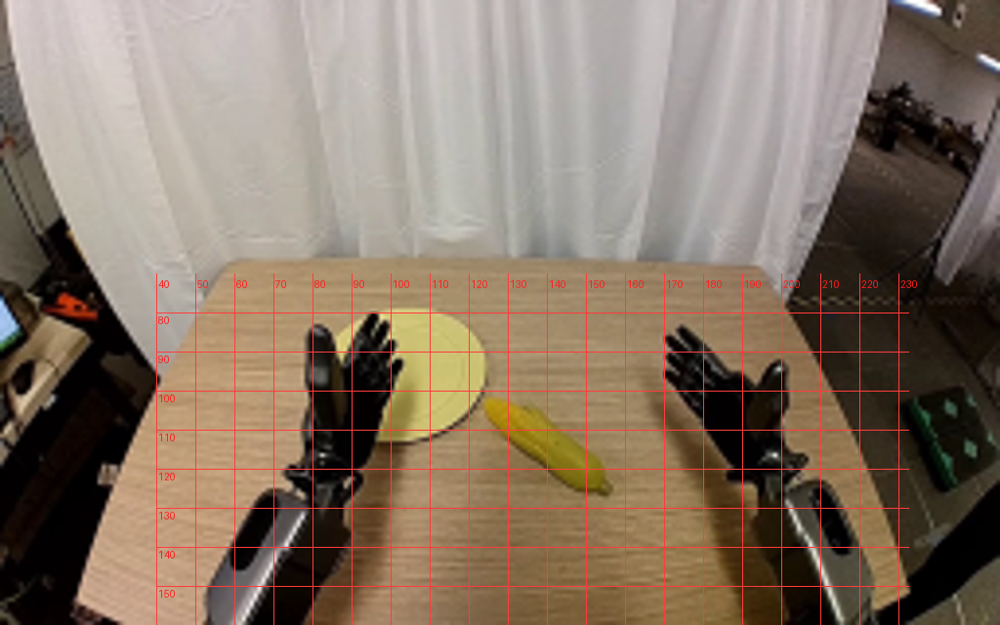
视觉工具实际返回图片 3
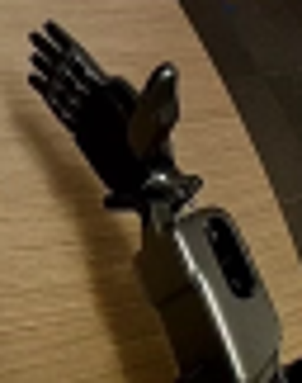
视觉工具实际返回图片 4
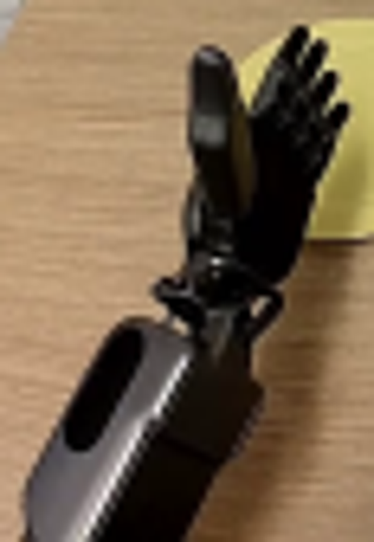
视觉工具实际返回图片 5
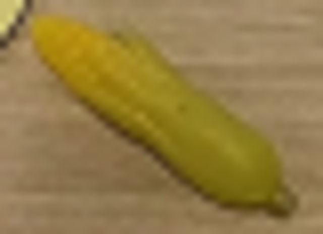
视觉工具实际返回图片 6
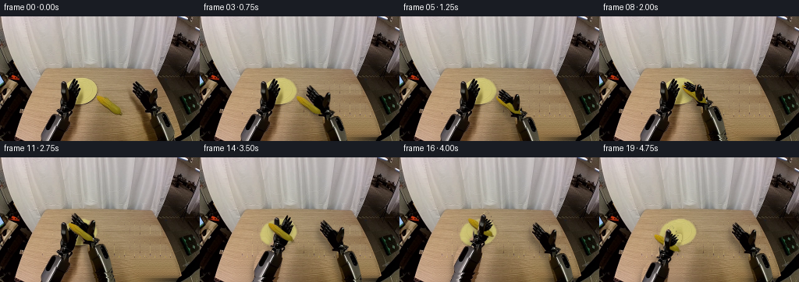
视觉工具实际返回图片 7
视觉工具实际返回图片 8

视觉工具实际返回图片 9
视觉工具实际返回图片 10
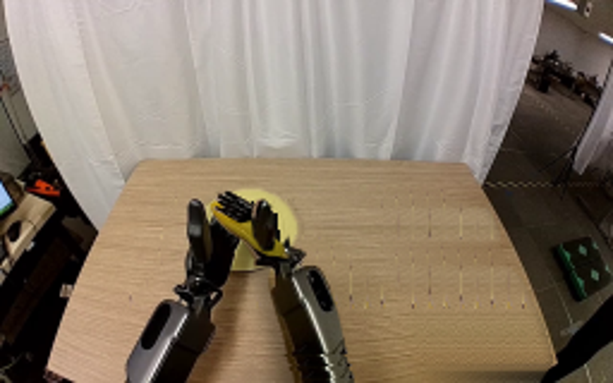
视觉工具实际返回图片 11
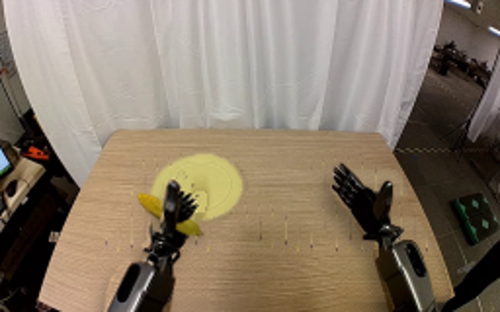
视觉工具实际返回图片 12
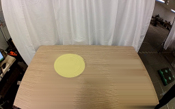
视觉工具实际返回图片 13
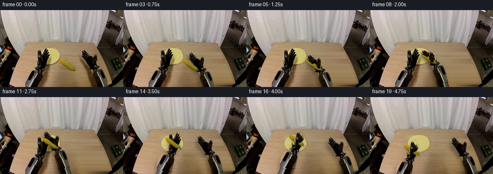
视觉工具实际返回图片 14
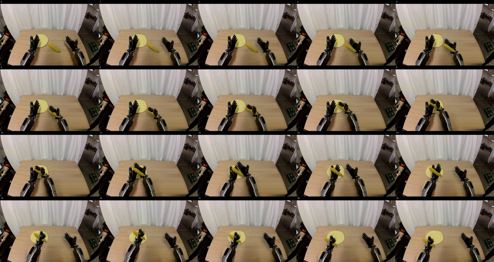
视觉工具实际返回图片 15

视觉工具实际返回图片 16
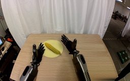
保存候选 3 份；完成命令 12 次；可验证图片返回 16 张。原始 API 响应与完整日志保留在本地。